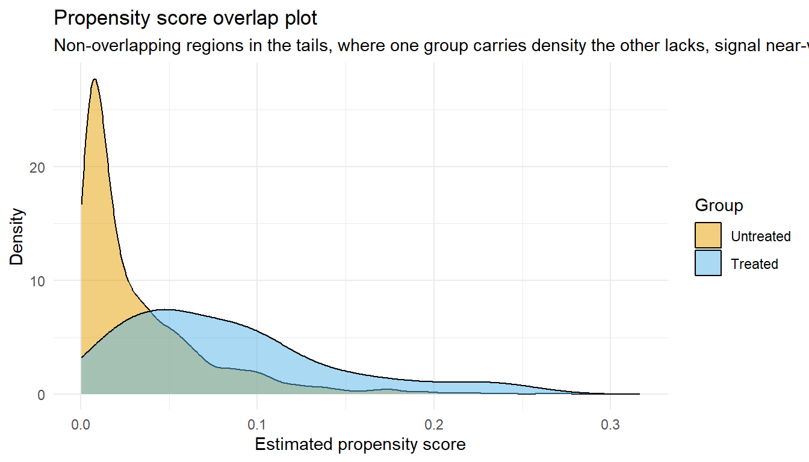
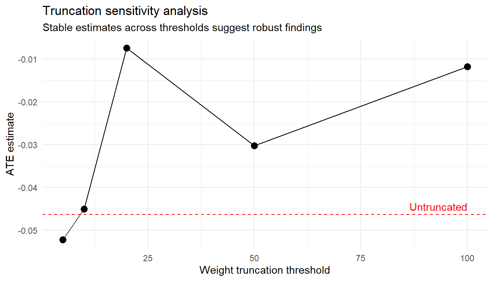
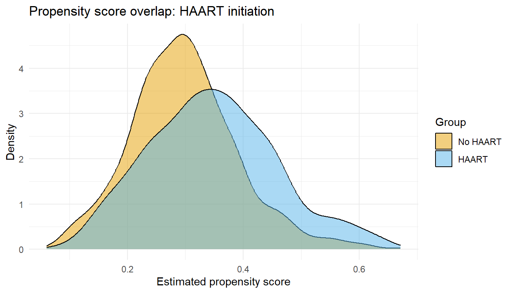

When your data cannot answer the causal question you are asking
Estimated reading time: 50 minutes
11.1 A cautionary tale from pharmacoepidemiology
A research team set out to estimate the effect of HAART initiation on mortality in an HIV cohort. They carefully assembled a claims-derived dataset, adjusted for dozens of confounders, and ran an IPTW analysis. The result was startling: a risk ratio of 0.12 for mortality, implying HAART cut the death rate by 88%. Clinicians welcomed the magnitude but treatment epidemiologists were skeptical. When the analysts inspected the propensity score distribution they discovered the problem. Patients with very low CD4 counts and recent opportunistic infections were essentially always started on HAART under the guidelines in force at the time, while a small number who never initiated despite meeting those criteria looked nothing like anyone else in the cohort. Those untreated, very-low-CD4 patients had near-zero propensity scores for “no HAART,” and their inverse-probability weights were enormous. A handful of them dominated the entire estimate.
The culprit was a positivity violation: the data contained patient profiles for which one treatment was never (or almost never) observed. No amount of clever modeling can conjure information that the data simply do not contain.
We touched on positivity briefly in Chapter 5 and saw weight instability in Chapter 7. But positivity is too important, and too commonly the root cause of failed causal analyses, to scatter across chapters. This chapter gives it the dedicated treatment it deserves.
Learning objectives
After completing this chapter you will be able to:
State the positivity assumption formally and intuitively.
Distinguish structural from practical positivity violations.
Diagnose positivity problems using propensity score plots, overlap statistics, and effective sample size.
Explain how positivity violations distort IPTW, G-computation, and TMLE.
Apply practical remedies including population restriction, weight truncation, and modified treatment policies.
12 What Positivity Means
12.1 Intuition first
Imagine you want to estimate the causal effect of a drug versus no drug across all patients in your study. Positivity says: for every type of patient defined by the confounders you adjust for, both treatment options must be possible. If some patient profiles always receive the drug (or never receive it), you have no observed counterfactual for that stratum, and the causal contrast there is unidentifiable from data alone. You cannot learn the effect of a treatment in patients who would never have received it, any more than you can politically poll the views of people who never pick up the phone.
This formula requires us to estimate \(E[Y \mid A=a, W=w]\) for both values of \(a\) at every \(w\) in the population. If \(P(A=1 \mid W=w) = 0\) for some \(w\), we have no treated patients at that covariate value and must extrapolate from other regions. That extrapolation is unverifiable; we are guessing.
By analogy, positivity is like having a restaurant review for every item on the menu. If nobody has ever ordered the fish, you cannot credibly claim it is better or worse than the chicken. You can speculate, but the data are silent on that comparison.
12.4 Positivity with continuous or high-dimensional covariates
The formal definition above is stated for discrete \(W\), where we require \(P(A = a \mid W = w) > 0\) at every support point. When \(W\) is continuous or high-dimensional, the condition generalizes to positivity almost surely: the propensity score \(g(W) = P(A = 1 \mid W)\) must be bounded away from 0 and 1 with probability one in the analysis population.
Practical restatement. There exist constants \(0 < \delta_L \leq \delta_U < 1\) such that \(\delta_L \leq g(W) \leq \delta_U\) almost surely. In applied work, this means the estimated propensity scores should be bounded away from the boundaries, not just on average, but for every observation that contributes to the analysis.
When propensity scores approach 0 or 1 for a non-negligible fraction of the sample, the effective sample size shrinks, influence-function-based variance estimates grow, and the causal estimand becomes poorly identified in the tails of the covariate distribution. For instance, if elderly patients with renal impairment are almost never prescribed the new drug, the propensity score for that group approaches zero, and estimates for their subgroup rely entirely on model extrapolation.
This is not merely a technical annoyance. When positivity fails for a subpopulation, the most principled response is often to revise the estimand rather than to truncate weights or extrapolate. Modified treatment policies and stochastic interventions (see Chapter 15) define interventions that remain within the observed data support by construction, avoiding the need to estimate treatment effects in regions where the data are sparse.
Alternatively, one can restrict the target population to the subset with adequate overlap, acknowledging that the resulting estimate answers a different (but well-defined) causal question. This often arises in claims-based studies when certain comorbidity profiles are strongly associated with one treatment, leaving little or no overlap for the alternative.
13 Structural vs. Practical Positivity Violations
Not all positivity problems are alike. The distinction matters because the appropriate response differs.
13.1 Structural violations
A structural violation occurs when certain patients cannot receive a treatment by definition or by design (Petersen and Laan 2014).
Example
Why structural
Comparing hysterectomy vs. watchful waiting: men cannot receive hysterectomy
Biological impossibility
Pediatric drug not approved for adults
Regulatory prohibition
Dialysis only available at certain facilities
Geographic/logistic constraint
Because the treatment is truly impossible, you should redefine the target population to exclude those strata. Trying to estimate a causal effect for patients who could never be treated is asking a question the world cannot answer, not just a question the data cannot answer.
13.2 Practical violations
A practical (or random) violation occurs when treatment is theoretically possible but so rare that the data contain few or no treated (or untreated) patients in certain strata.
Example
Why practical
Very elderly patients rarely prescribed a newer drug
Clinical preference, not prohibition
Patients with severe liver disease rarely enrolled in trials
Selection bias, not impossibility
Patients at small rural sites rarely receive complex interventions
Resource constraints
Practical violations are more insidious because they can be hard to detect. The treatment is not forbidden; it just almost never happens. Analysts may not realize they are forcing the estimator to extrapolate.
Adjusting for more confounders can make positivity worse
Adding covariates reduces confounding bias (good) but splits the data into finer strata, each with fewer patients (bad for positivity). There is a genuine tension between exchangeability and positivity. Targeted Learning methods help manage this trade-off, but they cannot eliminate it.
14 How to Diagnose Positivity Problems
Let us build a simulated dataset with a deliberate positivity problem, then walk through the diagnostic toolkit.
14.1 Simulate data with a positivity gap
Show code
library(tidyverse)set.seed(42)n <-2000# Generate confoundersage <-rnorm(n, mean =60, sd =12)severity <-rbinom(n, 1, prob =0.4)# Treatment assignment: strongly depends on age and severity# Patients with age > 75 AND severity == 1 almost never get treatedlogit_ps <-0.5-0.06* age -1.8* severity -0.04* (age >75) * severity *10ps_true <-plogis(logit_ps)A <-rbinom(n, 1, prob = ps_true)# Outcome (binary: adverse event within 1 year)lp_y <--3+0.03* age +0.8* severity -0.5* A +0.01* A * ageY <-rbinom(n, 1, plogis(lp_y))dat <-tibble(age, severity, A, Y, ps_true)# Examine the positivity gapdat |>mutate(age_group =case_when( age <=55~"<=55", age <=65~"56-65", age <=75~"66-75",TRUE~">75" )) |>group_by(age_group, severity) |>summarise(n =n(),n_treated =sum(A),prop_treated =mean(A),.groups ="drop" ) |>arrange(age_group, severity) |> knitr::kable(digits =3, caption ="Treatment prevalence by age group and severity")
Treatment prevalence by age group and severity
age_group
severity
n
n_treated
prop_treated
56-65
0
408
15
0.037
56-65
1
250
1
0.004
66-75
0
256
5
0.020
66-75
1
197
0
0.000
<=55
0
395
42
0.106
<=55
1
285
5
0.018
>75
0
128
1
0.008
>75
1
81
1
0.012
Look at the older, high-severity stratum. Treatment is rare there, sometimes vanishingly so. That is our positivity problem.
14.2 Propensity score density plots
The single most useful positivity diagnostic is a density plot of the estimated propensity score, separated by treatment group.
Show code
# Fit a propensity score modelps_model <-glm(A ~ age * severity +I(age^2), data = dat, family = binomial)dat$ps_hat <-predict(ps_model, type ="response")ggplot(dat, aes(x = ps_hat, fill =factor(A))) +geom_density(alpha =0.5) +scale_fill_manual(values =c("0"="#E69F00", "1"="#56B4E9"),labels =c("Untreated", "Treated") ) +labs(x ="Estimated propensity score",y ="Density",fill ="Group",title ="Propensity score overlap plot",subtitle ="Poor overlap visible in the left tail (treated patients with very low PS)" ) +theme_minimal()

Figure 14.1: Propensity score distributions by treatment group in the simulated data. Good overlap (both groups spanning the full range) supports positivity; mass piling up near 0 or 1 in only one group signals near-violations.
Good overlap looks like the two densities sitting on top of each other across most of the propensity score range. Bad overlap looks like one group having density where the other does not. The non-overlapping region is where positivity is violated.
14.3 Numerical overlap summaries
Show code
dat |>group_by(A) |>summarise(min_ps =min(ps_hat),q05_ps =quantile(ps_hat, 0.05),median =median(ps_hat),q95_ps =quantile(ps_hat, 0.95),max_ps =max(ps_hat),.groups ="drop" ) |> knitr::kable(digits =4, caption ="Propensity score distribution by treatment group")
Propensity score distribution by treatment group
A
min_ps
q05_ps
median
q95_ps
max_ps
0
4e-04
0.0027
0.0179
0.1093
0.3167
1
2e-03
0.0128
0.0685
0.2105
0.2551
14.4 Identifying problematic covariate strata
Beyond the propensity score, inspect the raw covariate-treatment cross-tabulation. Look for cells with zero or near-zero counts.
Show code
dat |>mutate(age_cat =cut(age, breaks =c(-Inf, 55, 65, 75, Inf),labels =c("<=55", "56-65", "66-75", ">75")) ) |>count(age_cat, severity, A) |>pivot_wider(names_from = A, values_from = n, values_fill =0) |>rename(untreated =`0`, treated =`1`) |>mutate(pct_treated = treated / (treated + untreated)) |> knitr::kable(digits =3,caption ="Covariate strata by treatment: look for near-empty cells")
Covariate strata by treatment: look for near-empty cells
age_cat
severity
untreated
treated
pct_treated
<=55
0
353
42
0.106
<=55
1
280
5
0.018
56-65
0
393
15
0.037
56-65
1
249
1
0.004
66-75
0
251
5
0.020
66-75
1
197
0
0.000
>75
0
127
1
0.008
>75
1
80
1
0.012
14.5 A reusable data-support report
The individual checks above are easier to use as one routine that returns the numbers most worth seeing before trusting any weighted or standardized estimate. Pass the treatment, the estimated propensity score, and a covariate frame; the report gives the propensity mass in the tails, the largest stabilized weight, the effective sample size, and the covariate balance before and after weighting. Later chapters refer back to this report rather than re-deriving the pieces.
$pct_ps_below_05
[1] 75.8
$pct_ps_above_95
[1] 0
$max_stab_weight
[1] 17.1
$effective_n
[1] 1710
$nominal_n
[1] 2000
$smd_before_after
before after
age -0.795 0.237
severity -0.776 0.091
Read it as a checklist. Any appreciable mass with a propensity below 0.05 or above 0.95 flags patients with little counterfactual support. A maximum stabilized weight in the tens or hundreds, or an effective sample size far below the nominal count, means a few patients dominate. The standardized mean differences should shrink toward zero after weighting; a covariate whose imbalance persists is one the weights failed to balance, which points back to the propensity model. The covariate-by-treatment cell table above complements this by exposing exact structural zeros, and the per-stratum version of the same positivity check, applied inside each subgroup, appears in Chapter 19.
15 How Positivity Problems Affect Different Estimators
Using our simulated data, let us see how each estimator behaves when positivity is violated. The true ATE in the data-generating process depends on the covariate distribution, so we will focus on stability and plausibility of estimates rather than a single truth.
15.1 IPTW: extreme weights
IPTW inverts the propensity score, so patients with \(P(A=1 \mid W) \approx 0\) who nonetheless received treatment get enormous weights.
A single patient with a weight of 50 counts as much as 50 patients. If that patient has an unusual outcome (by chance), it can shift the entire ATE estimate. This is not bias in the usual sense; it is finite-sample instability driven by near-violations of positivity.
15.2 G-computation: silent extrapolation
G-computation fits an outcome model \(E[Y \mid A, W]\) and then predicts under each treatment value for every patient. When positivity is violated, those predictions require the outcome model to extrapolate into covariate regions with no (or very few) treated patients.
Show code
out_model <-lm(Y ~ A * age * severity, data = dat)dat <- dat |>mutate(Y1_hat =predict(out_model, newdata =mutate(dat, A =1)),Y0_hat =predict(out_model, newdata =mutate(dat, A =0)) )ate_gcomp <-mean(dat$Y1_hat - dat$Y0_hat)cat("G-computation ATE estimate:", round(ate_gcomp, 3), "\n")
G-computation ATE estimate: -0.029
G-computation may look stable, but that stability is an illusion. It relies entirely on the parametric model being correct in the extrapolation region, and there is no data to check it. The model might predict that an 90-year-old with severe comorbidities would benefit from treatment, but if no such patient was ever treated, that prediction is pure speculation dressed up as an estimate.
15.3 TMLE: clever covariate instability
TMLE (Chapter 8, doubly-robust-tmle.qmd) updates the initial outcome model using a “clever covariate” \(H(A, W) = A / g(W) - (1-A) / (1 - g(W))\). When \(g(W)\) is near zero, this clever covariate explodes, just like the IPW weight. TMLE inherits the instability of IPTW through its targeting step, even though it also uses an outcome model. In practice, you might see one or two observations with clever-covariate values ten times larger than the rest, suggesting those patients are driving the entire estimate.
Show code
# Demonstrate clever covariate magnitudedat <- dat |>mutate(clever_cov = A / ps_hat - (1- A) / (1- ps_hat) )dat |>summarise(max_abs_H =max(abs(clever_cov)),q99_abs_H =quantile(abs(clever_cov), 0.99),mean_abs_H =mean(abs(clever_cov)) ) |> knitr::kable(digits =2,caption ="Clever covariate magnitude: large values indicate positivity trouble")
Clever covariate magnitude: large values indicate positivity trouble
max_abs_H
q99_abs_H
mean_abs_H
488.86
22.43
2.08
The bottom line is that no estimator is immune to positivity violations. IPTW shows the problem as weight instability. G-computation hides it behind model extrapolation. TMLE sits in between, inheriting instability through the clever covariate while gaining some protection from the outcome model. The real solution is not to choose a “better” estimator; it is to address the positivity problem directly.
16 Practical Responses to Positivity Violations
16.1 Redefine the target population
The most principled response is to restrict the analysis to the population where overlap exists. You are changing the question, not patching the estimator.
Show code
# Restrict to the overlap region (e.g., PS between 0.05 and 0.95)dat_trimmed <- dat |>filter(ps_hat >0.05, ps_hat <0.95)cat("Original sample:", nrow(dat), "\n")
This is honest. You are now estimating the ATE for the sub-population with adequate support, not the full population. Report this clearly.
16.2 Weight truncation with sensitivity analysis
If trimming the population is not desirable, you can truncate (cap) the IPW weights at a threshold. This introduces some bias but reduces variance (Hernán and Robins 2025). The key is to try several thresholds and see how the estimate changes.
Show code
truncation_sensitivity <-function(data, thresholds) {map_dfr(thresholds, function(thr) { d <- data |>mutate(ipw_trunc =pmin(ipw, thr)) ate <- d |>summarise(ate =weighted.mean(Y[A ==1], ipw_trunc[A ==1]) -weighted.mean(Y[A ==0], ipw_trunc[A ==0]) ) |>pull(ate)tibble(threshold = thr, ate_estimate = ate, max_weight = thr) })}thresholds <-c(5, 10, 20, 50, 100, Inf)results <-truncation_sensitivity(dat, thresholds)results |>mutate(threshold =if_else(is.infinite(threshold), "None", as.character(threshold))) |> knitr::kable(digits =3, caption ="Sensitivity of IPTW to weight truncation")
Sensitivity of IPTW to weight truncation
threshold
ate_estimate
max_weight
5
-0.052
5
10
-0.045
10
20
-0.007
20
50
-0.030
50
100
-0.012
100
None
-0.046
Inf
Show code
# Visualize truncation sensitivityresults_plot <- results |>filter(is.finite(threshold))ggplot(results_plot, aes(x = threshold, y = ate_estimate)) +geom_point(size =3) +geom_line() +geom_hline(yintercept = results$ate_estimate[is.infinite(results$threshold)],linetype ="dashed", color ="red" ) +annotate("text", x =max(results_plot$threshold), y = ate_iptw,label ="Untruncated", hjust =1, vjust =-0.5, color ="red") +labs(x ="Weight truncation threshold",y ="ATE estimate",title ="Truncation sensitivity analysis",subtitle ="Stable estimates across thresholds suggest robust findings" ) +theme_minimal()

Figure 16.1: ATE estimate as a function of the propensity-score truncation threshold. A stable line indicates the estimate does not hinge on a handful of extreme weights; a steep slope flags a result driven by near-positivity violations.
If the ATE estimate barely changes as you relax the truncation threshold, the result is not driven by extreme weights and positivity violations are not dominating. If the estimate swings wildly, the causal conclusion depends heavily on a few patients with near-zero propensity scores, and you should be cautious.
Instead of asking “What if everyone received treatment?”, you can ask “What if everyone’s probability of treatment were shifted slightly upward?” This avoids counterfactual scenarios that violate positivity. We will encounter these in detail in later chapters; for now, just note the idea: if the static intervention \(\text{do}(A=1)\) creates positivity problems, a stochastic or shift intervention may not.
16.4 A remedies decision guide
The responses above are not a menu to pick from at random; the diagnosis points to the remedy. The table maps what the diagnostics show to what to do, and to how the estimand changes as a result.
What the diagnostics show
Recommended response
Estimand consequence
A few extreme weights, estimate stable under truncation
Truncate and report a truncation sensitivity curve
Mild; the target is essentially unchanged
A region of covariate space with no overlap
Restrict to the overlap region
The target becomes the ATE in the overlap population
The question is about the treated, and controls are sparse
The target becomes a feasible, support-respecting intervention
A longitudinal regime loses support across visits
Use a feasible shift rule rather than a fixed path
As above, defined visit by visit
The unifying principle is that a positivity problem signals that the data cannot answer the original question. The honest move is to answer a nearby question the data can support, and to state plainly which question that is.
16.5 Honest reporting
When positivity problems remain after reasonable adjustments, the most important response is transparency. Report:
The proportion of patients in low-overlap regions.
The maximum and 99th-percentile IPW weights.
The effective sample size (next section).
Sensitivity analyses under different truncation levels.
The sub-populations where the estimate is well supported versus extrapolated.
17 Effective Sample Size
Extreme weights do not just inflate variance; they reduce the amount of information in your sample. The effective sample size (ESS) quantifies how many equally weighted observations your weighted sample is equivalent to (Hernán and Robins 2025).
There is no universal cutoff, but common recommendations include:
ESS < 50% of actual sample size: warning flag; inspect weights.
ESS < 20% of actual sample size: serious concern; consider trimming or population restriction.
ESS < n for one group but not the other: asymmetric positivity, often indicating that one treatment direction has poor support.
ESS is a summary, not a diagnosis
A healthy ESS does not guarantee that positivity holds everywhere. A few problematic strata can be masked by many well-behaved ones. Always pair ESS with the overlap plots and covariate-specific tables shown in Chapter 14.
18 Running Example: Antiretroviral Therapy Cohort
See the Running Case Study for the full data description. The HAART cohort provides a clear illustration of practical positivity violations. Clinicians initiate HAART based on declining CD4 counts, so patients with very low baseline CD4 are nearly always treated. This means the untreated group has little or no representation in the low-CD4 region, precisely the pattern diagnosed in the simulated examples above.
Show code
source("_data/load-haart-cohort.R")# Fit propensity score model for HAART initiationps_haart <-glm( ever_haart ~ age + sex + cd4_sqrt_baseline,family = binomial,data = haart_baseline)haart_baseline <- haart_baseline |>mutate(ps_hat =predict(ps_haart, type ="response"))# Propensity score overlap plotggplot(haart_baseline, aes(x = ps_hat, fill =factor(ever_haart))) +geom_density(alpha =0.5) +scale_fill_manual(values =c("0"="#E69F00", "1"="#56B4E9"),labels =c("No HAART", "HAART") ) +labs(x ="Estimated propensity score",y ="Density",fill ="Group",title ="Propensity score overlap: HAART initiation" ) +theme_minimal()

Figure 18.1: Propensity score overlap for HAART initiation in the running cohort. Substantial overlap across initiators and non-initiators is what makes the confounding-by-indication adjustment credible; regions where one group is absent are where positivity is strained.
The overlap plot reveals that patients with low cd4_sqrt_baseline cluster near propensity scores of 1, because clinical guidelines make HAART initiation near-certain for severely immunocompromised patients. This is a practical (not structural) positivity violation: HAART is not literally required, but it is rarely withheld.
Any causal estimate for those patients relies heavily on model extrapolation rather than observed counterfactual data. Analysts should consider restricting the target population to the overlap region or reporting effective sample sizes (Chapter 16) to quantify how much information these near-violations consume.
19 Positivity in the longitudinal setting
In a longitudinal analysis the treatment decision is repeated at every visit, and positivity must hold at each one. The danger is multiplicative. A treatment probability that is merely uncomfortable at a single visit becomes untenable once it is chained across many visits, because the longitudinal estimand depends on the product of the per-visit probabilities. A regime that asks a patient to have followed an increasingly unlikely treatment path can end up with almost no support, even when each single step looked acceptable.
The diagnostic mirrors the point-treatment one but is computed visit by visit, and the cumulative product is the quantity to watch.
Show code
set.seed(5)n <-1000g1 <-plogis(rnorm(n, 1.0, 0.7)) # probability of following the regime at each visit,g2 <-plogis(rnorm(n, 0.7, 0.9)) # each individually plausibleg3 <-plogis(rnorm(n, 0.4, 1.1))cum_g <- g1 * g2 * g3 # probability of following the regime through visit 3data.frame(visit =c("v1", "v2", "v3", "cumulative"),min_prob =round(c(min(g1), min(g2), min(g3), min(cum_g)), 3),pct_below_10 =round(100*c(mean(g1 <0.1), mean(g2 <0.1),mean(g3 <0.1), mean(cum_g <0.1)), 1))
Each visit on its own looks tolerable, but the cumulative probability develops a long tail near zero, and the inverse of that cumulative probability is the weight a longitudinal IPW analysis would carry. TMLE-based longitudinal estimators (Chapter 13) avoid forming explicit weight products, but they inherit the same support limitation: the contrast still rests on person-histories that barely occur. The visit-by-visit treatment-probability and effective-sample-size diagnostic in Chapter 18 is the applied version of this check. When the cumulative support is thin, the static regime is the wrong target, and a modified treatment policy that shifts treatment by a feasible amount (Chapter 15) restores support.
20 Summary
Chapter summary
Positivity requires that every confounder stratum has a non-zero probability of each treatment value. Without it, the causal effect is not identified from data alone.
Structural violations (treatment impossible) call for redefining the target population. Practical violations (treatment very rare) call for diagnostic checks and possibly modified estimands.
All estimators suffer: IPTW through extreme weights, G-computation through hidden extrapolation, TMLE through clever covariate instability.
Practical responses: restrict to the overlap population, truncate weights with sensitivity analysis, consider shift interventions, and report limitations honestly.
Effective sample size quantifies information loss from extreme weights and serves as a quick summary diagnostic.
21 Check Your Understanding
Question 1. A colleague argues: “I use G-computation, so I don’t need to worry about positivity because I never compute weights.” Why is this wrong?
Show answer
G-computation still requires estimating \(E[Y \mid A=a, W=w]\) for both treatment values at every covariate pattern. When no treated patients exist in a stratum, G-computation extrapolates the outcome model into that region. The estimate there depends entirely on the parametric model, not on data. The analyst may not even realize this is happening because there are no extreme weights to flag the problem. Positivity is an identification assumption, not an estimation assumption, so it applies regardless of the estimator used.
Question 2. You fit a propensity score model and find that 95% of your sample has propensity scores between 0.15 and 0.85, but 5% of treated patients have scores below 0.02. What should you do?
Show answer
First, investigate who those 5% are. Check which covariate patterns produce near-zero propensity scores and ask whether those patients should be in the target population at all (structural violation) or whether treatment is merely rare there (practical violation). Then consider: (a) restricting to the overlap region (PS > 0.02 or stricter), which changes the estimand to the sub-population with adequate support; (b) truncating weights and running a sensitivity analysis across several thresholds; (c) reporting the effective sample size with and without those patients. Whatever you choose, be transparent that the ATE for the full population is poorly supported by the data.
Question 3. Your effective sample size is 900 out of 1,000 actual patients. Does this mean positivity holds?
Show answer
Not necessarily. ESS is a global summary. It is possible for a small subgroup to have severe positivity problems that are diluted by the well-behaved majority. For example, if 950 patients have moderate weights (around 1) and 50 patients in a specific stratum have weights of 3 to 5, the overall ESS could still look healthy while that stratum is poorly supported. Always supplement ESS with overlap plots and covariate-specific tables to identify localized problems.
22 What Comes Next
Now that you understand when your data can and cannot support a causal question, you are ready to see these ideas in action. The adherence shift methods chapter walks through a complete applied example where positivity diagnostics, weight inspection, and population-restriction decisions arise naturally in a longitudinal pharmacoepidemiology study. You will see how the toolkit from this chapter integrates with the estimation methods from Chapter 7 and Chapter 8 in a realistic analysis workflow.
Petersen, Maya L, and Mark J van der Laan. 2014. “Causal Models and Learning from Data: Integrating Causal Modeling and Statistical Estimation.”Epidemiology 25 (3): 418–26.
Source Code
---subtitle: "When your data cannot answer the causal question you are asking"format: html---*Estimated reading time: 50 minutes*```{r}#| include: falseknitr::opts_chunk$set(echo =TRUE,fig.width =7, fig.height =4)```# Positivity, Overlap, and Data Support {#sec-positivity-overlap}## A cautionary tale from pharmacoepidemiologyA research team set out to estimate the effect of HAART initiation on mortalityin an HIV cohort. They carefully assembled a claims-derived dataset, adjusted fordozens of confounders, and ran an IPTW analysis. The result was startling: a riskratio of 0.12 for mortality, implying HAART cut the death rate by 88%. Clinicianswelcomed the magnitude but treatment epidemiologists were skeptical. When theanalysts inspected the propensity score distribution they discovered the problem.Patients with very low CD4 counts and recent opportunistic infections wereessentially *always* started on HAART under the guidelines in force at the time,while a small number who never initiated despite meeting those criteria lookednothing like anyone else in the cohort. Those untreated, very-low-CD4 patients hadnear-zero propensity scores for "no HAART," and their inverse-probability weightswere enormous. A handful of them dominated the entire estimate.The culprit was a **positivity violation**: the data contained patient profiles forwhich one treatment was never (or almost never) observed. No amount of clevermodeling can conjure information that the data simply do not contain.We touched on positivity briefly in @sec-roadmap and saw weight instability in @sec-iptw. But positivity is too important, and too commonly the root cause of failed causal analyses, to scatter across chapters. This chapter gives it the dedicated treatment it deserves.::: {.callout-note}## Learning objectivesAfter completing this chapter you will be able to:1. State the positivity assumption formally and intuitively.2. Distinguish structural from practical positivity violations.3. Diagnose positivity problems using propensity score plots, overlap statistics, and effective sample size.4. Explain how positivity violations distort IPTW, G-computation, and TMLE.5. Apply practical remedies including population restriction, weight truncation, and modified treatment policies.:::---# What Positivity Means {#sec-positivity-defn}## Intuition firstImagine you want to estimate the causal effect of a drug versus no drug across allpatients in your study. Positivity says: **for every type of patient defined by theconfounders you adjust for, both treatment options must be possible.** If some patientprofiles always receive the drug (or never receive it), you have no observedcounterfactual for that stratum, and the causal contrast there is unidentifiable fromdata alone. You cannot learn the effect of a treatment in patients who would never have received it, any more than you can politically poll the views of people who never pick up the phone.## Formal definitionFor every level of confounders $w$ that occurs in the population (that is,$P(W = w) > 0$), we require [@hernan2025whatif; @petersen2014causal]:$$0 < P(A = a \mid W = w) < 1 \quad \text{for all treatment levels } a$${#eq-positivity}In words: the probability of receiving each treatment value, conditional on covariates,is bounded away from zero and one.## Connection to identificationRecall the G-computation identification formula from @sec-roadmap:$$\psi = E_W\!\Big[\,E[Y \mid A=1, W] - E[Y \mid A=0, W]\,\Big]$$This formula requires us to estimate $E[Y \mid A=a, W=w]$ for *both* values of $a$at every $w$ in the population. If $P(A=1 \mid W=w) = 0$ for some $w$, we have notreated patients at that covariate value and must extrapolate from other regions. Thatextrapolation is unverifiable; we are guessing.By analogy, positivity is like having a restaurant review for every item on the menu. If nobody has ever ordered the fish, you cannot credibly claim it is better or worse than the chicken. You can speculate, but the data are silent on that comparison.## Positivity with continuous or high-dimensional covariatesThe formal definition above is stated for discrete $W$, where we require $P(A = a \mid W = w) > 0$ at every support point. When $W$ is continuous or high-dimensional, the condition generalizes to positivity **almost surely**: the propensity score $g(W) = P(A = 1 \mid W)$ must be bounded away from 0 and 1 with probability one in the analysis population.**Practical restatement.** There exist constants $0 < \delta_L \leq \delta_U < 1$ such that $\delta_L \leq g(W) \leq \delta_U$ almost surely. In applied work, this means the estimated propensity scores should be bounded away from the boundaries, not just on average, but for every observation that contributes to the analysis.When propensity scores approach 0 or 1 for a non-negligible fraction of the sample, the effective sample size shrinks, influence-function-based variance estimates grow, and the causal estimand becomes poorly identified in the tails of the covariate distribution. For instance, if elderly patients with renal impairment are almost never prescribed the new drug, the propensity score for that group approaches zero, and estimates for their subgroup rely entirely on model extrapolation.This is not merely a technical annoyance. When positivity fails for a subpopulation, the most principled response is often to **revise the estimand** rather than to truncate weights or extrapolate. Modified treatment policies and stochastic interventions (see @sec-adherence-shift) define interventions that remain within the observed data support by construction, avoiding the need to estimate treatment effects in regions where the data are sparse.Alternatively, one can restrict the target population to the subset with adequate overlap, acknowledging that the resulting estimate answers a different (but well-defined) causal question. This often arises in claims-based studies when certain comorbidity profiles are strongly associated with one treatment, leaving little or no overlap for the alternative.---# Structural vs. Practical Positivity ViolationsNot all positivity problems are alike. The distinction matters because the appropriateresponse differs.## Structural violationsA **structural violation** occurs when certain patients *cannot* receive a treatment bydefinition or by design [@petersen2014causal].| Example | Why structural ||---------|---------------|| Comparing hysterectomy vs. watchful waiting: men cannot receive hysterectomy | Biological impossibility || Pediatric drug not approved for adults | Regulatory prohibition || Dialysis only available at certain facilities | Geographic/logistic constraint |Because the treatment is truly impossible, you should **redefine the target population**to exclude those strata. Trying to estimate a causal effect for patients who couldnever be treated is asking a question the world cannot answer, not just a question thedata cannot answer.## Practical violationsA **practical (or random) violation** occurs when treatment is *theoretically* possiblebut so rare that the data contain few or no treated (or untreated) patients in certainstrata.| Example | Why practical ||---------|--------------|| Very elderly patients rarely prescribed a newer drug | Clinical preference, not prohibition || Patients with severe liver disease rarely enrolled in trials | Selection bias, not impossibility || Patients at small rural sites rarely receive complex interventions | Resource constraints |Practical violations are more insidious because they can be hard to detect. Thetreatment is not forbidden; it just almost never happens. Analysts may not realize theyare forcing the estimator to extrapolate.::: {.callout-warning}## Adjusting for more confounders can make positivity worseAdding covariates reduces confounding bias (good) but splits the data into finerstrata, each with fewer patients (bad for positivity). There is a genuine tensionbetween exchangeability and positivity. Targeted Learning methods help manage thistrade-off, but they cannot eliminate it.:::---# How to Diagnose Positivity Problems {#sec-diagnose}Let us build a simulated dataset with a deliberate positivity problem, then walkthrough the diagnostic toolkit.## Simulate data with a positivity gap```{r}#| code-fold: truelibrary(tidyverse)set.seed(42)n <-2000# Generate confoundersage <-rnorm(n, mean =60, sd =12)severity <-rbinom(n, 1, prob =0.4)# Treatment assignment: strongly depends on age and severity# Patients with age > 75 AND severity == 1 almost never get treatedlogit_ps <-0.5-0.06* age -1.8* severity -0.04* (age >75) * severity *10ps_true <-plogis(logit_ps)A <-rbinom(n, 1, prob = ps_true)# Outcome (binary: adverse event within 1 year)lp_y <--3+0.03* age +0.8* severity -0.5* A +0.01* A * ageY <-rbinom(n, 1, plogis(lp_y))dat <-tibble(age, severity, A, Y, ps_true)# Examine the positivity gapdat |>mutate(age_group =case_when( age <=55~"<=55", age <=65~"56-65", age <=75~"66-75",TRUE~">75" )) |>group_by(age_group, severity) |>summarise(n =n(),n_treated =sum(A),prop_treated =mean(A),.groups ="drop" ) |>arrange(age_group, severity) |> knitr::kable(digits =3, caption ="Treatment prevalence by age group and severity")```Look at the older, high-severity stratum. Treatment is rare there, sometimesvanishingly so. That is our positivity problem.## Propensity score density plotsThe single most useful positivity diagnostic is a density plot of the estimatedpropensity score, separated by treatment group.```{r}#| label: fig-ps-overlap-sim#| fig-cap: "Propensity score distributions by treatment group in the simulated data. Good overlap (both groups spanning the full range) supports positivity; mass piling up near 0 or 1 in only one group signals near-violations."#| code-fold: true# Fit a propensity score modelps_model <-glm(A ~ age * severity +I(age^2), data = dat, family = binomial)dat$ps_hat <-predict(ps_model, type ="response")ggplot(dat, aes(x = ps_hat, fill =factor(A))) +geom_density(alpha =0.5) +scale_fill_manual(values =c("0"="#E69F00", "1"="#56B4E9"),labels =c("Untreated", "Treated") ) +labs(x ="Estimated propensity score",y ="Density",fill ="Group",title ="Propensity score overlap plot",subtitle ="Poor overlap visible in the left tail (treated patients with very low PS)" ) +theme_minimal()```Good overlap looks like the two densities sitting on top of each other across most of the propensity score range. Bad overlap looks like one group having density where the other does not. The non-overlapping region is where positivity is violated.## Numerical overlap summaries```{r}#| code-fold: truedat |>group_by(A) |>summarise(min_ps =min(ps_hat),q05_ps =quantile(ps_hat, 0.05),median =median(ps_hat),q95_ps =quantile(ps_hat, 0.95),max_ps =max(ps_hat),.groups ="drop" ) |> knitr::kable(digits =4, caption ="Propensity score distribution by treatment group")```## Identifying problematic covariate strataBeyond the propensity score, inspect the raw covariate-treatment cross-tabulation.Look for cells with zero or near-zero counts.```{r}#| code-fold: truedat |>mutate(age_cat =cut(age, breaks =c(-Inf, 55, 65, 75, Inf),labels =c("<=55", "56-65", "66-75", ">75")) ) |>count(age_cat, severity, A) |>pivot_wider(names_from = A, values_from = n, values_fill =0) |>rename(untreated =`0`, treated =`1`) |>mutate(pct_treated = treated / (treated + untreated)) |> knitr::kable(digits =3,caption ="Covariate strata by treatment: look for near-empty cells")```## A reusable data-support reportThe individual checks above are easier to use as one routine that returns the numbers most worth seeing before trusting any weighted or standardized estimate. Pass the treatment, the estimated propensity score, and a covariate frame; the report gives the propensity mass in the tails, the largest stabilized weight, the effective sample size, and the covariate balance before and after weighting. Later chapters refer back to this report rather than re-deriving the pieces.```{r}#| code-fold: showdata_support_report <-function(A, ps, W) { w <-ifelse(A ==1, mean(A) / ps, mean(1- A) / (1- ps)) # stabilized weights ess <-sum(w)^2/sum(w^2) smd <-sapply(W, function(x) { s <-sqrt((var(x[A ==1]) +var(x[A ==0])) /2) # pooled SDc(before = (mean(x[A ==1]) -mean(x[A ==0])) / s,after = (weighted.mean(x[A ==1], w[A ==1]) -weighted.mean(x[A ==0], w[A ==0])) / s) })list(pct_ps_below_05 =round(100*mean(ps <0.05), 1),pct_ps_above_95 =round(100*mean(ps >0.95), 1),max_stab_weight =round(max(w), 1),effective_n =round(ess),nominal_n =length(A),smd_before_after =round(t(smd), 3) )}data_support_report(dat$A, dat$ps_hat, dat[, c("age", "severity")])```Read it as a checklist. Any appreciable mass with a propensity below 0.05 or above 0.95 flags patients with little counterfactual support. A maximum stabilized weight in the tens or hundreds, or an effective sample size far below the nominal count, means a few patients dominate. The standardized mean differences should shrink toward zero after weighting; a covariate whose imbalance persists is one the weights failed to balance, which points back to the propensity model. The covariate-by-treatment cell table above complements this by exposing exact structural zeros, and the per-stratum version of the same positivity check, applied inside each subgroup, appears in @sec-effect-modification.---# How Positivity Problems Affect Different Estimators {#sec-estimator-effects}Using our simulated data, let us see how each estimator behaves when positivity isviolated. The true ATE in the data-generating process depends on the covariatedistribution, so we will focus on *stability* and *plausibility* of estimates ratherthan a single truth.## IPTW: extreme weightsIPTW inverts the propensity score, so patients with $P(A=1 \mid W) \approx 0$ whononetheless received treatment get enormous weights.```{r}#| code-fold: true# Compute IPTW weightsdat <- dat |>mutate(ipw =if_else(A ==1, 1/ ps_hat, 1/ (1- ps_hat)) )# Inspect weight distributiondat |>summarise(mean_wt =mean(ipw),max_wt =max(ipw),pct_gt_10 =mean(ipw >10) *100,pct_gt_20 =mean(ipw >20) *100 ) |> knitr::kable(digits =2, caption ="IPW weight summary: large weights signal trouble")# IPTW estimate (Horvitz-Thompson style)ate_iptw <- dat |>summarise(ate =weighted.mean(Y[A ==1], ipw[A ==1]) -weighted.mean(Y[A ==0], ipw[A ==0]) ) |>pull(ate)cat("IPTW ATE estimate:", round(ate_iptw, 3), "\n")```::: {.callout-important}## Why extreme weights are dangerousA single patient with a weight of 50 counts as much as 50 patients. If that patienthas an unusual outcome (by chance), it can shift the entire ATE estimate. This is notbias in the usual sense; it is **finite-sample instability** driven by near-violationsof positivity.:::## G-computation: silent extrapolationG-computation fits an outcome model $E[Y \mid A, W]$ and then predicts under eachtreatment value for every patient. When positivity is violated, those predictionsrequire the outcome model to extrapolate into covariate regions with no (or very few)treated patients.```{r}out_model <-lm(Y ~ A * age * severity, data = dat)dat <- dat |>mutate(Y1_hat =predict(out_model, newdata =mutate(dat, A =1)),Y0_hat =predict(out_model, newdata =mutate(dat, A =0)) )ate_gcomp <-mean(dat$Y1_hat - dat$Y0_hat)cat("G-computation ATE estimate:", round(ate_gcomp, 3), "\n")```G-computation may look stable, but that stability is an illusion. It relies entirely onthe parametric model being correct in the extrapolation region, and there is no data tocheck it. The model might predict that an 90-year-old with severe comorbidities would benefit from treatment, but if no such patient was ever treated, that prediction is pure speculation dressed up as an estimate.## TMLE: clever covariate instabilityTMLE (@sec-doubly-robust-tmle, `doubly-robust-tmle.qmd`) updates the initial outcome modelusing a "clever covariate" $H(A, W) = A / g(W) - (1-A) / (1 - g(W))$. When $g(W)$is near zero, this clever covariate explodes, just like the IPW weight. TMLEinherits the instability of IPTW through its targeting step, even though it also usesan outcome model. In practice, you might see one or two observations with clever-covariate values ten times larger than the rest, suggesting those patients are driving the entire estimate.```{r}#| code-fold: true# Demonstrate clever covariate magnitudedat <- dat |>mutate(clever_cov = A / ps_hat - (1- A) / (1- ps_hat) )dat |>summarise(max_abs_H =max(abs(clever_cov)),q99_abs_H =quantile(abs(clever_cov), 0.99),mean_abs_H =mean(abs(clever_cov)) ) |> knitr::kable(digits =2,caption ="Clever covariate magnitude: large values indicate positivity trouble")```The bottom line is that no estimator is immune to positivity violations. IPTW shows the problem as weight instability. G-computation hides it behind model extrapolation. TMLE sits in between, inheriting instability through the clever covariate while gaining some protection from the outcome model. The real solution is not to choose a "better" estimator; it is to address the positivity problem directly.---# Practical Responses to Positivity Violations {#sec-responses}## Redefine the target populationThe most principled response is to restrict the analysis to the population whereoverlap exists. You are changing the *question*, not patching the estimator.```{r}# Restrict to the overlap region (e.g., PS between 0.05 and 0.95)dat_trimmed <- dat |>filter(ps_hat >0.05, ps_hat <0.95)cat("Original sample:", nrow(dat), "\n")cat("After trimming: ", nrow(dat_trimmed),sprintf("(%.0f%% retained)\n", 100*nrow(dat_trimmed) /nrow(dat)))```This is honest. You are now estimating the ATE for the sub-population with adequatesupport, not the full population. Report this clearly.## Weight truncation with sensitivity analysisIf trimming the population is not desirable, you can truncate (cap) the IPW weights ata threshold. This introduces some bias but reduces variance [@hernan2025whatif]. The key is to try severalthresholds and see how the estimate changes.```{r}#| code-fold: truetruncation_sensitivity <-function(data, thresholds) {map_dfr(thresholds, function(thr) { d <- data |>mutate(ipw_trunc =pmin(ipw, thr)) ate <- d |>summarise(ate =weighted.mean(Y[A ==1], ipw_trunc[A ==1]) -weighted.mean(Y[A ==0], ipw_trunc[A ==0]) ) |>pull(ate)tibble(threshold = thr, ate_estimate = ate, max_weight = thr) })}thresholds <-c(5, 10, 20, 50, 100, Inf)results <-truncation_sensitivity(dat, thresholds)results |>mutate(threshold =if_else(is.infinite(threshold), "None", as.character(threshold))) |> knitr::kable(digits =3, caption ="Sensitivity of IPTW to weight truncation")``````{r}#| label: fig-truncation-sensitivity#| fig-cap: "ATE estimate as a function of the propensity-score truncation threshold. A stable line indicates the estimate does not hinge on a handful of extreme weights; a steep slope flags a result driven by near-positivity violations."#| code-fold: true# Visualize truncation sensitivityresults_plot <- results |>filter(is.finite(threshold))ggplot(results_plot, aes(x = threshold, y = ate_estimate)) +geom_point(size =3) +geom_line() +geom_hline(yintercept = results$ate_estimate[is.infinite(results$threshold)],linetype ="dashed", color ="red" ) +annotate("text", x =max(results_plot$threshold), y = ate_iptw,label ="Untruncated", hjust =1, vjust =-0.5, color ="red") +labs(x ="Weight truncation threshold",y ="ATE estimate",title ="Truncation sensitivity analysis",subtitle ="Stable estimates across thresholds suggest robust findings" ) +theme_minimal()```If the ATE estimate barely changes as you relax the truncation threshold, the result is not driven by extreme weights and positivity violations are not dominating. If the estimate swings wildly, the causal conclusion depends heavily on a few patients with near-zero propensity scores, and you should be cautious.## Modified treatment policies (shift interventions)Instead of asking "What if everyone received treatment?", you can ask "What ifeveryone's probability of treatment were shifted slightly upward?" This avoidscounterfactual scenarios that violate positivity. We will encounter these in detail inlater chapters; for now, just note the idea: if the static intervention$\text{do}(A=1)$ creates positivity problems, a *stochastic* or *shift* interventionmay not.## A remedies decision guideThe responses above are not a menu to pick from at random; the diagnosis points to the remedy. The table maps what the diagnostics show to what to do, and to how the estimand changes as a result.| What the diagnostics show | Recommended response | Estimand consequence ||---|---|---|| A few extreme weights, estimate stable under truncation | Truncate and report a truncation sensitivity curve | Mild; the target is essentially unchanged || A region of covariate space with no overlap | Restrict to the overlap region | The target becomes the ATE in the overlap population || The question is about the treated, and controls are sparse | Target the ATT rather than the ATE | The question narrows to the treated || A static "treat everyone" regime has no support | Switch to a stochastic or modified treatment policy (@sec-adherence-shift, @sec-applied-lmtp) | The target becomes a feasible, support-respecting intervention || A longitudinal regime loses support across visits | Use a feasible shift rule rather than a fixed path | As above, defined visit by visit |The unifying principle is that a positivity problem signals that the data cannot answer the original question. The honest move is to answer a nearby question the data can support, and to state plainly which question that is.## Honest reportingWhen positivity problems remain after reasonable adjustments, the most importantresponse is transparency. Report:- The proportion of patients in low-overlap regions.- The maximum and 99th-percentile IPW weights.- The effective sample size (next section).- Sensitivity analyses under different truncation levels.- The sub-populations where the estimate is well supported versus extrapolated.---# Effective Sample Size {#sec-ess}Extreme weights do not just inflate variance; they reduce the amount of information inyour sample. The **effective sample size (ESS)** quantifies how many equally weightedobservations your weighted sample is equivalent to [@hernan2025whatif].## FormulaFor a set of weights $w_1, \ldots, w_n$:$$\text{ESS} = \frac{\left(\sum_{i=1}^n w_i\right)^2}{\sum_{i=1}^n w_i^2}$${#eq-ess}If all weights are equal, $\text{ESS} = n$. If one weight dominates,$\text{ESS} \approx 1$.## Code```{r}#| code-fold: truecompute_ess <-function(weights) {sum(weights)^2/sum(weights^2)}# ESS for each treatment groupess_treated <-compute_ess(dat$ipw[dat$A ==1])ess_untreated <-compute_ess(dat$ipw[dat$A ==0])tibble(group =c("Treated", "Untreated", "Total"),n_actual =c(sum(dat$A ==1), sum(dat$A ==0), nrow(dat)),ess =c(ess_treated, ess_untreated, compute_ess(dat$ipw)),pct_retained =round(100* ess / n_actual, 1)) |> knitr::kable(digits =1, caption ="Effective sample size by treatment group")```## Threshold guidanceThere is no universal cutoff, but common recommendations include:- **ESS < 50% of actual sample size**: warning flag; inspect weights.- **ESS < 20% of actual sample size**: serious concern; consider trimming or population restriction.- **ESS < n for one group but not the other**: asymmetric positivity, often indicating that one treatment direction has poor support.::: {.callout-important}## ESS is a summary, not a diagnosisA healthy ESS does not guarantee that positivity holds everywhere. A few problematicstrata can be masked by many well-behaved ones. Always pair ESS with the overlap plotsand covariate-specific tables shown in @sec-diagnose.:::---# Running Example: Antiretroviral Therapy Cohort {#sec-running-example}See the [Running Case Study](00-case-study.qmd) for the full data description. The HAART cohort provides a clear illustration of practical positivity violations. Clinicians initiate HAART based on declining CD4 counts, so patients with very low baseline CD4 are nearly always treated. This means the untreated group has little or no representation in the low-CD4 region, precisely the pattern diagnosed in the simulated examples above.```{r}#| label: fig-ps-overlap-haart#| fig-cap: "Propensity score overlap for HAART initiation in the running cohort. Substantial overlap across initiators and non-initiators is what makes the confounding-by-indication adjustment credible; regions where one group is absent are where positivity is strained."#| code-fold: truesource("_data/load-haart-cohort.R")# Fit propensity score model for HAART initiationps_haart <-glm( ever_haart ~ age + sex + cd4_sqrt_baseline,family = binomial,data = haart_baseline)haart_baseline <- haart_baseline |>mutate(ps_hat =predict(ps_haart, type ="response"))# Propensity score overlap plotggplot(haart_baseline, aes(x = ps_hat, fill =factor(ever_haart))) +geom_density(alpha =0.5) +scale_fill_manual(values =c("0"="#E69F00", "1"="#56B4E9"),labels =c("No HAART", "HAART") ) +labs(x ="Estimated propensity score",y ="Density",fill ="Group",title ="Propensity score overlap: HAART initiation" ) +theme_minimal()```The overlap plot reveals that patients with low `cd4_sqrt_baseline` cluster near propensity scores of 1, because clinical guidelines make HAART initiation near-certain for severely immunocompromised patients. This is a practical (not structural) positivity violation: HAART is not literally required, but it is rarely withheld.Any causal estimate for those patients relies heavily on model extrapolation rather than observed counterfactual data. Analysts should consider restricting the target population to the overlap region or reporting effective sample sizes (@sec-advanced-diagnostics) to quantify how much information these near-violations consume.---# Positivity in the longitudinal setting {#sec-longitudinal-positivity}In a longitudinal analysis the treatment decision is repeated at every visit, and positivity must hold at each one. The danger is multiplicative. A treatment probability that is merely uncomfortable at a single visit becomes untenable once it is chained across many visits, because the longitudinal estimand depends on the product of the per-visit probabilities. A regime that asks a patient to have followed an increasingly unlikely treatment path can end up with almost no support, even when each single step looked acceptable.The diagnostic mirrors the point-treatment one but is computed visit by visit, and the cumulative product is the quantity to watch.```{r}#| code-fold: showset.seed(5)n <-1000g1 <-plogis(rnorm(n, 1.0, 0.7)) # probability of following the regime at each visit,g2 <-plogis(rnorm(n, 0.7, 0.9)) # each individually plausibleg3 <-plogis(rnorm(n, 0.4, 1.1))cum_g <- g1 * g2 * g3 # probability of following the regime through visit 3data.frame(visit =c("v1", "v2", "v3", "cumulative"),min_prob =round(c(min(g1), min(g2), min(g3), min(cum_g)), 3),pct_below_10 =round(100*c(mean(g1 <0.1), mean(g2 <0.1),mean(g3 <0.1), mean(cum_g <0.1)), 1))```Each visit on its own looks tolerable, but the cumulative probability develops a long tail near zero, and the inverse of that cumulative probability is the weight a longitudinal IPW analysis would carry. TMLE-based longitudinal estimators (@sec-illustrated-ltmle) avoid forming explicit weight products, but they inherit the same support limitation: the contrast still rests on person-histories that barely occur. The visit-by-visit treatment-probability and effective-sample-size diagnostic in @sec-applied-lmtp is the applied version of this check. When the cumulative support is thin, the static regime is the wrong target, and a modified treatment policy that shifts treatment by a feasible amount (@sec-adherence-shift) restores support.---# Summary {#sec-summary}::: {.callout-tip}## Chapter summary1. **Positivity** requires that every confounder stratum has a non-zero probability of each treatment value. Without it, the causal effect is not identified from data alone.2. **Structural violations** (treatment impossible) call for redefining the target population. **Practical violations** (treatment very rare) call for diagnostic checks and possibly modified estimands.3. **Diagnosis toolkit**: propensity score overlap plots, covariate-by-treatment tables, effective sample size.4. **All estimators suffer**: IPTW through extreme weights, G-computation through hidden extrapolation, TMLE through clever covariate instability.5. **Practical responses**: restrict to the overlap population, truncate weights with sensitivity analysis, consider shift interventions, and report limitations honestly.6. **Effective sample size** quantifies information loss from extreme weights and serves as a quick summary diagnostic.:::---# Check Your Understanding**Question 1.** A colleague argues: "I use G-computation, so I don't need to worryabout positivity because I never compute weights." Why is this wrong?<details><summary>Show answer</summary>G-computation still requires estimating $E[Y \mid A=a, W=w]$ for both treatmentvalues at every covariate pattern. When no treated patients exist in a stratum,G-computation extrapolates the outcome model into that region. The estimate theredepends entirely on the parametric model, not on data. The analyst may not evenrealize this is happening because there are no extreme weights to flag the problem.Positivity is an *identification* assumption, not an estimation assumption, so itapplies regardless of the estimator used.</details>**Question 2.** You fit a propensity score model and find that 95% of your sample haspropensity scores between 0.15 and 0.85, but 5% of treated patients have scores below0.02. What should you do?<details><summary>Show answer</summary>First, investigate *who* those 5% are. Check which covariate patterns producenear-zero propensity scores and ask whether those patients should be in the targetpopulation at all (structural violation) or whether treatment is merely rare there(practical violation). Then consider: (a) restricting to the overlap region(PS > 0.02 or stricter), which changes the estimand to the sub-population withadequate support; (b) truncating weights and running a sensitivity analysis acrossseveral thresholds; (c) reporting the effective sample size with and without thosepatients. Whatever you choose, be transparent that the ATE for the full populationis poorly supported by the data.</details>**Question 3.** Your effective sample size is 900 out of 1,000 actual patients. Doesthis mean positivity holds?<details><summary>Show answer</summary>Not necessarily. ESS is a global summary. It is possible for a small subgroup tohave severe positivity problems that are diluted by the well-behaved majority. Forexample, if 950 patients have moderate weights (around 1) and 50 patients in aspecific stratum have weights of 3 to 5, the overall ESS could still look healthywhile that stratum is poorly supported. Always supplement ESS with overlap plots andcovariate-specific tables to identify localized problems.</details>---# What Comes NextNow that you understand when your data can and cannot support a causal question, youare ready to see these ideas in action. The [adherence shift methods chapter](03-03b-adherence-shift-methods.qmd)walks through a complete applied example where positivity diagnostics, weightinspection, and population-restriction decisions arise naturally in a longitudinalpharmacoepidemiology study. You will see how the toolkit from this chapter integrateswith the estimation methods from @sec-iptw and @sec-doubly-robust-tmle in a realistic analysisworkflow.---```{r}sessionInfo()```